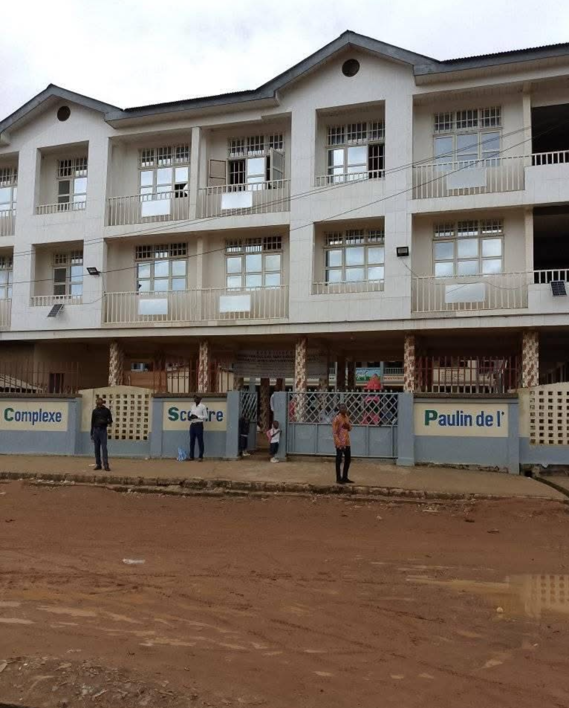
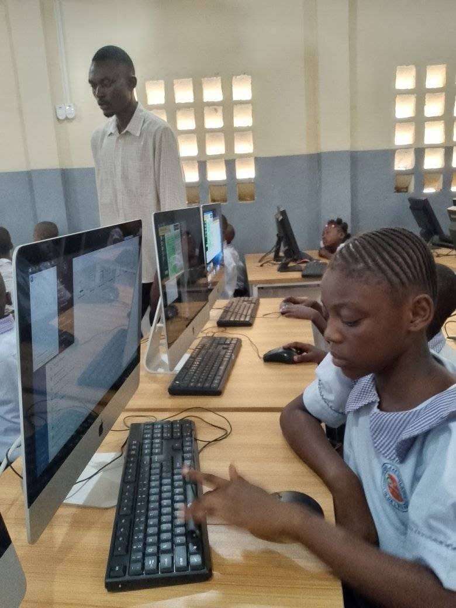
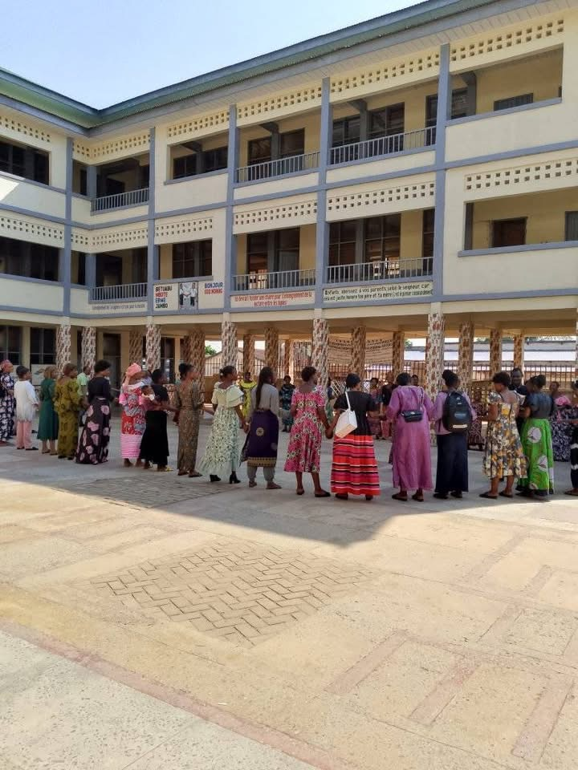
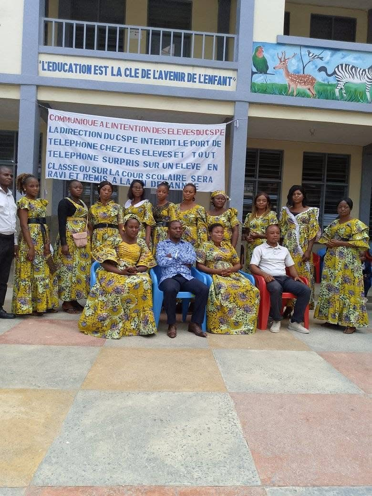

COMPLEXE SCOLAIRE PAULIN DE L'ETERNEL
Bienvenue sur le site de l'ecole

Le site officiel du Clomplexe Scolaire Paulin de l'Eternel a été concu pour faciliter la communication et l'accès à l'information entre l'école, les parents et les élèves. cet espace permet de suivre les progrès scolaire, de rester informé des événements et d'accéder facilement aux ressources pédagogiques. Nous nous engageons pour une éducation de qualité et un partenariat fort avec les familles.
Le Complexe Scolaire Paulin de l'Éternel a été fondé en 2016 par Paulin Kanundowa, avec la vision d'offrir une éducation de qualité aux enfants et aux jeunes. Depuis sa création, l'établissement s'est distingué par son engagement envers l'excellence académique, la discipline, et la formation de citoyens responsables. Dès ses débuts, l'école a mis en place un environnement d'apprentissage stimulant, favorisant le développement intellectuel, moral et social de chaque élève. Grâce à une équipe pédagogique qualifiée et des infrastructures adaptées, le Complexe Scolaire Paulin de l'Éternel accueille des élèves de différents niveaux, de la maternelle au secondaire.
Il était une fois, dans un quartier calme et rempli de rêves, une petite école qui ouvrait ses portes avec une seule conviction : que chaque enfant a droit à une éducation digne, humaine et inspirante. Depuis ce jour, notre école n’a cessé de grandir – pas seulement en nombre d’élèves ou de salles de classe – mais en amour, en valeurs, en histoire et en espoir. 💫
Ici, nous croyons que l’école n’est pas seulement un lieu où l’on apprend à lire ou à compter. C’est un endroit où l’on apprend à vivre, à partager, à s’émerveiller du monde qui nous entoure. Chaque couloir a entendu des rires d’enfants, chaque banc a porté les rêves d’un avenir meilleur. Chaque enseignant, chaque membre du personnel, est un artisan silencieux qui façonne les citoyens de demain. ❤️
   
Chers parents, l’éducation est le plus beau cadeau que vous puissiez offrir à vos enfants.
À notre école, nous mettons tout en œuvre pour accueillir chaque élève dans un cadre chaleureux,
sécurisé et propice à l’épanouissement personnel et académique. 🌱
Ne tardez pas ! Les inscriptions sont ouvertes dès maintenant.
Réservez une place pour votre enfant et rejoignez une communauté engagée,
passionnée et tournée vers l’excellence. 🎓💼
Construisons ensemble l’avenir de vos enfants, dès aujourd’hui !
Debout Congolais, Unis par le sort, Unis dans l’effort pour l’indépendance, Dressons nos fronts longtemps courbés Et pour de bon prenons le plus bel élan, dans la paix. Ô peuple ardent, Par le labeur, Nous bâtirons un pays plus beau qu’avant, Dans la paix. Citoyens, entonnez l’hymne sacré de votre solidarité, Fièrement saluez l’emblème d’or de votre souveraineté, Congo. Don béni, Congo, Des aïeux, Congo, Ô pays, Congo, Bien aimé, Congo. Nous peuplerons ton sol et nous assurerons ta grandeur.
Le règlement intérieur a pour objectif de garantir le bon fonctionnement de l’école, d’assurer un climat de travail
favorable à l’apprentissage, au respect de soi et des autres. Chaque élève, chaque parent et chaque membre du personnel
est invité à prendre connaissance de ces règles essentielles à la vie collective. Ensemble, construisons une école responsable,
bienveillante et épanouissante pour tous. 🤝
1. Ponctualité et assiduité ⏰
Les élèves doivent arriver à l’heure. Toute absence doit être justifiée par un mot des parents ou un certificat médical.
Les retards répétés peuvent entraîner des sanctions éducatives.
2. Tenue vestimentaire 👔
Une tenue correcte et propre est exigée. L’uniforme de l’école (si applicable) doit être porté chaque jour de classe,
sauf indication contraire. Les signes ostentatoires ou provocateurs sont interdits.
3. Respect des personnes et des lieux 🏫
Les insultes, violences, moqueries, intimidations ou toute forme de harcèlement sont strictement interdites.
Le respect envers les enseignants, le personnel et les camarades est fondamental. Les locaux doivent être maintenus propres
et en bon état.
4. Matériel et devoirs 🎒
Chaque élève doit apporter son matériel scolaire et faire ses devoirs avec sérieux. La détérioration volontaire du matériel
scolaire ou des biens de l’école sera sanctionnée.
5. Téléphones et objets personnels 📵
L’usage du téléphone portable est interdit pendant les heures de classe. L’école décline toute responsabilité en cas de perte
ou de vol d’objets personnels non autorisés.
6. Sécurité et santé 🩺
Il est formellement interdit d’introduire dans l’école des objets dangereux, substances interdites ou de consommer
tout produit nocif. Toute situation inhabituelle doit être immédiatement signalée à un adulte responsable.
7. Participation et comportement 🌟
Les élèves doivent adopter un comportement exemplaire en classe et dans la cour. La participation active, le silence pendant
les cours et la coopération sont essentiels au bon déroulement des activités pédagogiques.
8. Sanctions éducatives ⚖️
En cas de non-respect du règlement, des sanctions peuvent être appliquées, allant de l’avertissement à une exclusion temporaire.
L’objectif est toujours éducatif et non punitif : aider l’élève à comprendre et à grandir.
En inscrivant votre enfant dans notre école, vous vous engagez à respecter ce règlement. Nous vous remercions pour votre
collaboration et votre confiance. Ensemble, créons une école où il fait bon apprendre, évoluer et rêver. 💙
Les inscriptions sont ouvertes dès le mois de juillet pour l'année scolaire suivante. Nous recommandons de ne pas attendre, les places sont limitées.
Nous accueillons les enfants de la Maternelle au Secondaire. Chaque niveau est encadré par des enseignants qualifiés et bienveillants.
Les cours commencent à 7h30 précises. Les portes de l’école sont ouvertes à partir de 7h00 pour accueillir les enfants.
Oui, nous proposons un service de cantine équilibrée. Vous pouvez également préparer un repas maison à votre enfant si vous le préférez.
Les frais varient selon le niveau de votre enfant. Merci de consulter notre secrétariat ou la page Tarifs pour plus de détails.
Nous organisons régulièrement des réunions parents-professeurs. Vous pouvez aussi suivre les résultats via notre messagerie ou tableau de bord en ligne.
Vous pouvez toujours appeler l’école au+243 838619545 ou passer par le formulaire de contact.